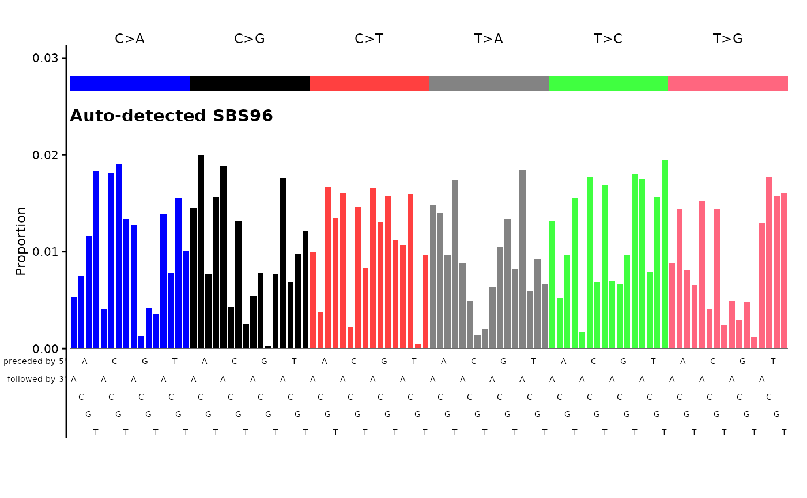

Plot mutational signature catalog with automatic channel detection
Source:R/plot_guess.R
plot_guess.RdAutomatically selects the appropriate plotting function based on the number of rows in the catalog.
Arguments
- catalog
Numeric vector, single-column data.frame, matrix, tibble, or data.table. The number of rows (or length) determines which plotting function is used:
1536 rows: calls
plot_SBS1536()476 rows: calls
plot_476()192 rows: calls
plot_SBS192()166 rows: calls
plot_ID166()144 rows: calls
plot_DBS144()136 rows: calls
plot_DBS136()96 rows: calls
plot_SBS96()89 rows: calls
plot_89()83 rows: calls
plot_83()78 rows: calls
plot_DBS78()
- ...
Additional arguments passed to the underlying plotting function.
Examples
# Auto-detect a 96-channel catalog and dispatch to plot_SBS96
set.seed(1)
sig <- runif(96)
sig <- sig / sum(sig)
names(sig) <- catalog_row_order()$SBS96
plot_guess(sig, plot_title = "Auto-detected SBS96")
